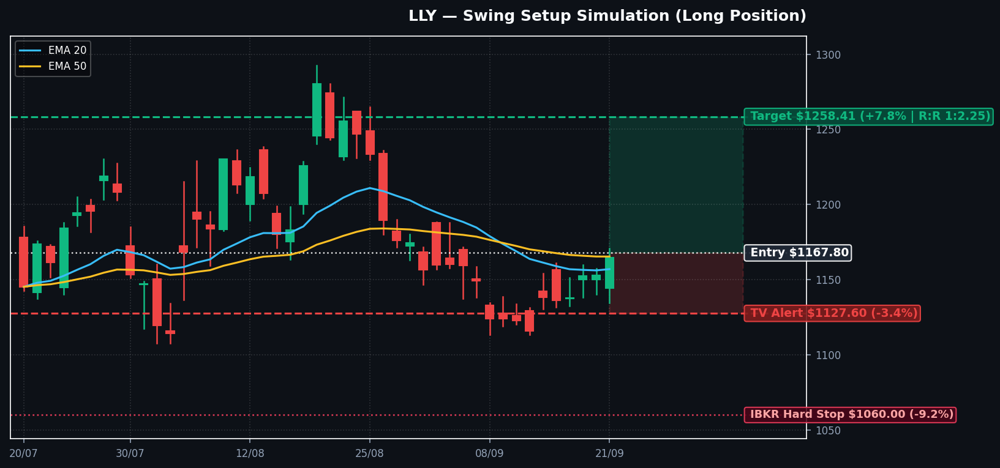

📊 סימולציית גרף מסחר מוגדלת
| סוכן בוועדה | עמדה | ציון | נימוקים מרכזיים שנשקלו |
|---|---|---|---|
| אנליסט טכני | שורי (+2) | בלימת תיקון מושלמת על EMA 20/50, מחיר מעל הממוצעים, RSI 50.9 עולה, מרווח מלא עד לתקרה. | |
| אנליסט מומנטום | שורי (+1) | איסוף קולים מוסדי שבועי ל-$1,200 ול-$1,250; מומנטום סקטוריאלי חזק בפארמה. | |
| מנהל סיכונים | מאושר (0) | אושר במודל היברידי: התראת TV ב-$1,127.60 + סטופ אסון ב-IBKR ב-$1,060.00 (מתחת ל-EMA 200). עבר מבחן מכשול קרוב. |
